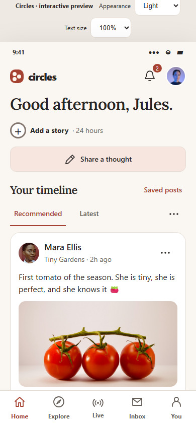
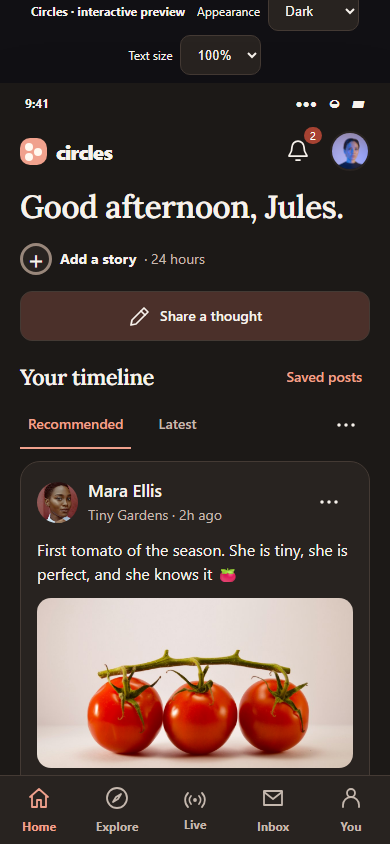
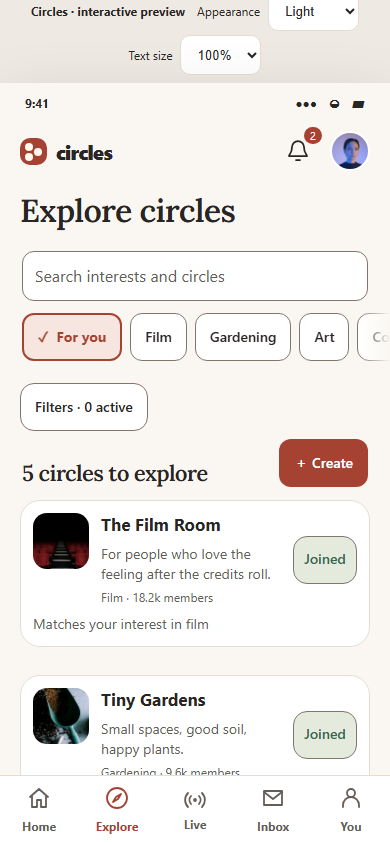
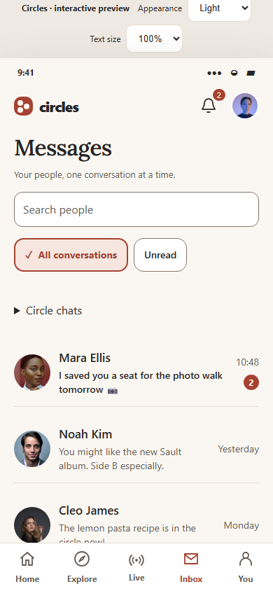
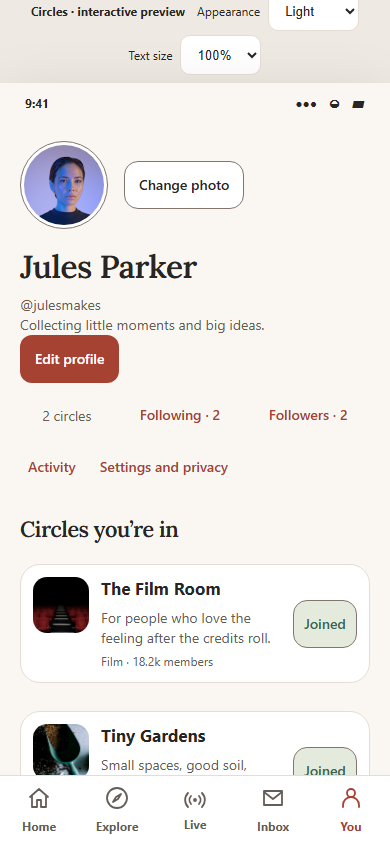
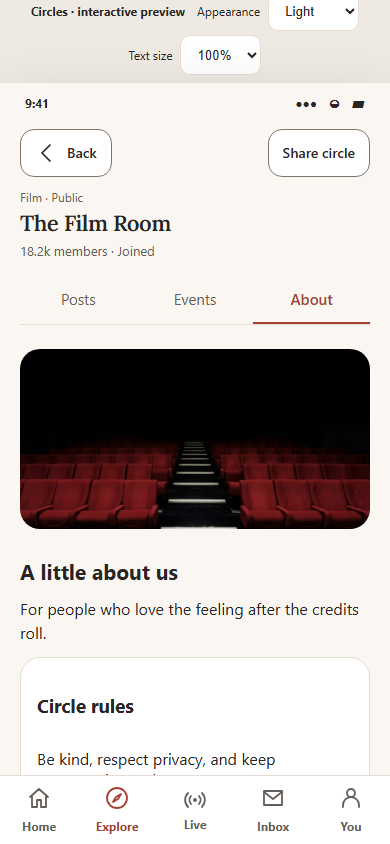
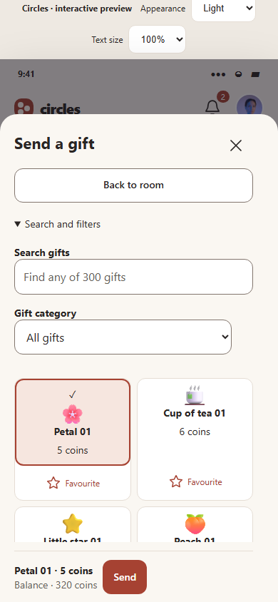
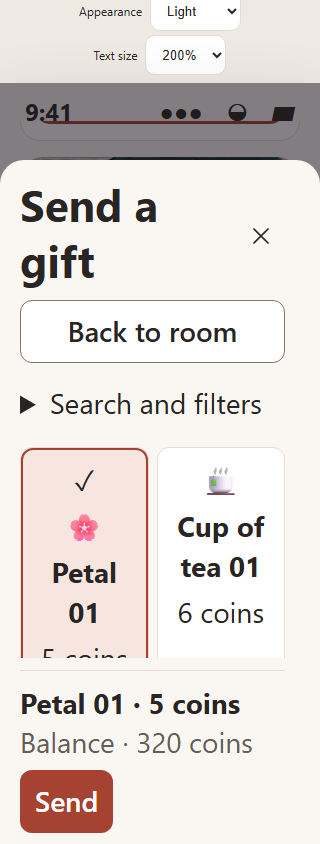
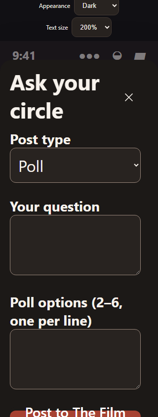
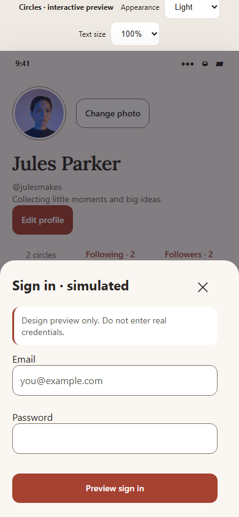

Circles · implementation record · 16 October 2026
Warm editorial redesign: all ten fixes implemented.
Native React Native screens and the browser preview share the warm palette, role metrics and SVG icon catalogue. Lora is bundled locally with its licence. Existing navigation, membership, drafts, media, deletion windows and story expiry are preserved.
Open updated local preview · Original audit · Machine-readable matrix
Ten findings and evidence
| Finding | Implemented change | Verification and limits |
|---|---|---|
| D01 Conversation tools |
Tools render in normal flow beneath the header, with a viewport-based maximum of 240 points. The message list and composer remain separate. |
Pre-fix regression failed on the clipped menu; fixed geometry test, attachment/reply
draft test, and 200% tools test pass. Implementation or regression evidence |
| D02 Enlarged-text reflow |
Proportional 100%, 140% and 200% preview scaling. Compact groups, navigation, people cards, circle tabs, media choices and gift filters reflow; native groups respond to width and fontScale. |
All 12 palette/width/scale combinations pass. Long-name, complete-control labels and
catalogue-height assertions pass. Native Dynamic Type inspection is pending. Implementation or regression evidence |
| D03 Selected states |
Terracotta borders, selected fills, checkmarks or tab underlines and accessible selected/pressed states. Applies to Inbox, interests, activity, polls, topics and gift categories. |
Pre-fix Inbox regression failed because styles were identical. Both palettes now
differ visibly; shared selected-text contrast passes. Implementation or regression evidence |
| D04 Control contrast |
Decorative dividers and essential control borders use separate tokens. Inputs, outlined controls and media choices use the stronger boundary. Focus, error, success and disabled treatments are explicit. |
Automated checks require 4.5:1 for text and 3:1 for essential control indicators
against paper and surfaces, in both palettes. Implementation or regression evidence |
| D05 Icon consistency |
One locally generated 24-point SVG catalogue serves native and preview. IconButton uses a typed icon property; navigation, post actions, media controls and sheet controls share paths and theme colours. The Circles logo and gift artwork remain. |
TypeScript passes all migrated callers. Browser tests confirm like toggling,
accessible names and absence of nested button roles. Implementation or regression evidence |
| D06 Typography |
Local Lora SemiBold titles; system body text and controls. Shared role metrics, 20-point page gutters, card/control/sheet radii and spacing are generated for both renderers. |
Font binary, OFL licence, system fallback and token checks pass. Both exported
native bundles contain the 134 KB font asset. Implementation or regression evidence |
| D07 Screen structure |
Compact circle identity stays above stable Posts/Events/About tabs; cover moves inside About. Search, library, chat, rules, members and permitted host controls are reached through Circle tools. |
Circle screens are captured in all 12 combinations. Native regression verifies Posts
default, Events content, management behind tools and non-member restrictions. Implementation or regression evidence |
| D08 Action hierarchy |
One Home creation action; quiet secondary routes and grouped post actions. Settings has direct Notifications, Safety and account, Catch-up, Interests and Wallet rows. Gift selection and sending are separate, with labelled favourites and a reachable balance/Send footer. |
Gift tests prove selecting/favouriting does not spend coins and Send deducts once.
Catalogue retains at least 140 pixels in every matrix combination. Implementation or regression evidence |
| D09 State clarity |
Timeline preference errors live inside their sheet; moderation has one empty state; libraries and topics explain next steps. Paused chat copy respects role restrictions. Decorative avatar frames are neutral; active stories retain expiry and reduced-motion rules. |
Existing mocked native error/retry, permission, draft, deletion-window and story
tests pass. Browser expiry and reduced-motion review pass. Physical screen-reader
and interruption checks remain pending. Implementation or regression evidence |
| D10 Preview parity |
Discovery filters use a sheet, poll options appear only in Poll mode, advanced media editing stays collapsed, circle tools obey local member/owner roles, and leave/report/moderation flows expose confirmation steps. Auth, reporting and moderation simulations are explicitly labelled. |
Browser tests cover conditional poll fields, permission-limited tools, simulated
reports without writes, attachment navigation and preserved drafts. Simulations do
not validate production services. Implementation or regression evidence |
Browser screen matrix
Each combination covers Home, Explore, Live, Inbox, You, simulated authentication, Circle Posts/Events/About, poll composition and gifts. Additional standard-size runs cover profile editing, community lists, wallet, activity, notification preferences, interests, conversations and tools, circle creation, scheduling, story creation/viewing and post composition. Long-name, empty search, permission-limited, draft and expiry scenarios have dedicated regressions.
| Palette | Width | Standard | Enlarged | Largest |
|---|---|---|---|---|
| Light | 320 | 100% · passed | 140% · passed | 200% · passed |
| Light | 390 | 100% · passed | 140% · passed | 200% · passed |
| Dark | 320 | 100% · passed | 140% · passed | 200% · passed |
| Dark | 390 | 100% · passed | 140% · passed | 200% · passed |
Updated screens










Native device checks still outstanding
ADB reports no connected test devices. An Android emulator definition exists, but no rebuilt development client was available for this review; iOS device tooling is unavailable on this Windows host. Rebuild the development client to include expo-font 57.0.4 and react-native-svg 15.15.4 before device QA.
- Check keyboard appearance, dismissal and composer visibility on iOS and Android.
- Verify safe areas, rotation, 320/390-point layouts and native 100%/140%/200% font scales.
- Review VoiceOver and TalkBack names, order, selected states, focus and modal dismissal.
- Review populated, empty, loading, error and permission-limited native screens in both themes.
- Verify camera/media interruption and connected service behavior separately; the browser uses local simulations.
The updated native smoke flow is ready for an installed development build and a disposable test account.
Reproduce the local checks
pnpm check runs tokens, TypeScript and regressions.
pnpm test:visual runs the browser suite on its isolated preview server; stop
the handoff preview first or use a separate port/config. Android and iOS exports use
pnpm export:android and pnpm export:ios.
This implementation did not deploy backend changes, publish, commit or push. Screenshots use demo data. Physical-device checks and production service certification are not marked passed.